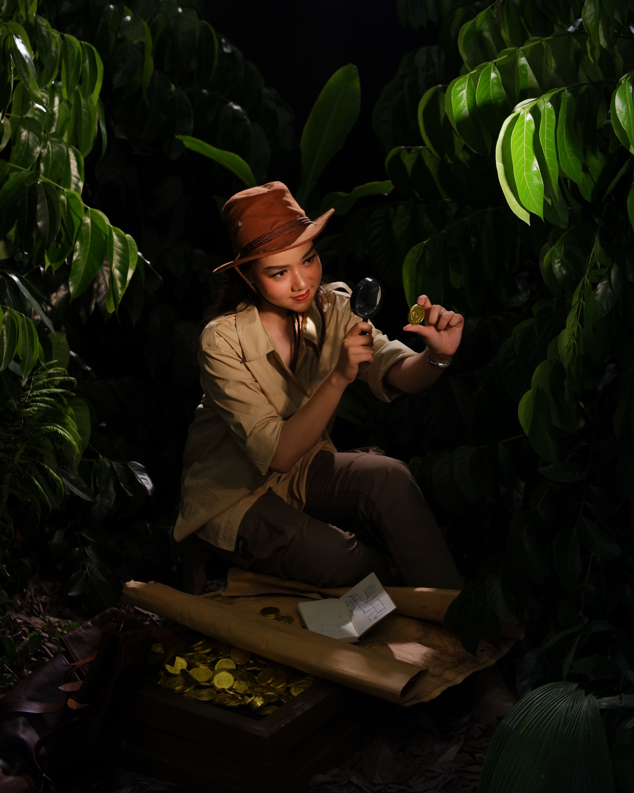

Volver a la pagina principal
Algunas de mis películas favoritas
- Son como niños
- Esta película se me hace muy chistosa y aparte de ello, me recuerda mucho a mi hermana que ya no vive conmigo. Me hace muy feliz verla.
 Cine
Cine
- Mujer bonita
- Un poco viejita pero me encanta verla. Se me hace muy romántica y tomar otra percepción de la vida o el amor.
- Jumanji
- Cual sea de las 3 me gustan muchisimmo. Amo verlas con mi familia porque siempre nos reimos juntos.

Referencia a la película
- Frankenweenie
- Un clásico, igual me encantaba verla de chiquita junto a mi hermana.
- Hangover
- Me encanta esa trilogía, la mejor sin duda es la dos pero no me molesta ver las tres seguidas.